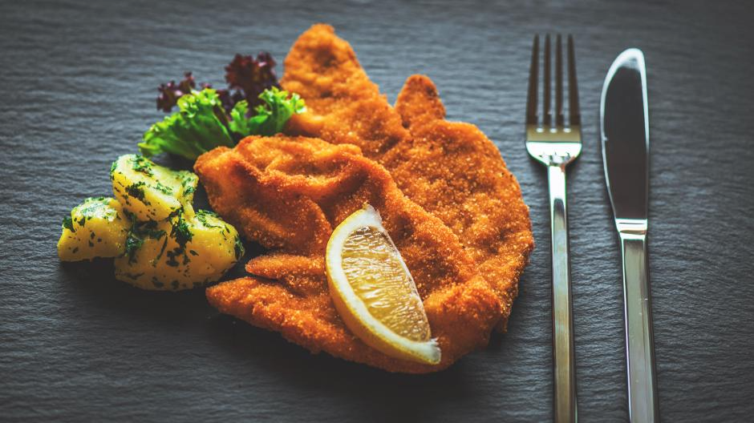

Einkaufsliste für 4 personen:
600g Oberschale, Nuss oder Rücken (pariert) vom Kalb
2-3 Eier
Salz
ca. 100-150g Mehl griffig oder doppelgriffig
ca. 150g Semmelbrösel
Butterschmalz
Zubereitung:
Schneide das fleisch in dünne scheiden